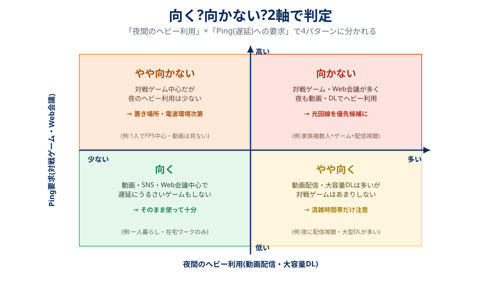

「ホームルーターはやめたほうがいい」という声、検索するとかなりの数が出てきます。ただ結論だけ言えば、一律で悪いわけではありません。5G対応が進んだ今のホームルーターは、数年前とは別物です。問題は「向かない使い方をしている人」が一定数いて、その人たちの不満がそのまま検索結果に積み重なっている、という構造です。
後悔するパターンは驚くほど共通しています。夜になると動画が止まる、対戦ゲームで急に反応が悪くなる、置き場所を変えても直らない、乗り換えたら端末代の残りを請求された——このいずれかです。この記事では「向かない人の条件」を4つに絞り、公式サイトの規約・料金表から裏付けを取ったうえで、機械的に判定できるチャートとチェックリストにしました。
ホームルーターが向かないのは、①夜間に動画配信や大容量ダウンロードをよくする ②対戦系オンラインゲームやオンライン会議を日常的に使う ③設置予定の部屋の電波環境が悪い ④2〜3年以内に解約・引越しの可能性が高い、の4条件が重なる人です。1つだけなら大きな問題にならないことが多いですが、2つ以上重なるなら、先に光回線を検討したほうが結果的に安上がりです。
自分が向いているか、まずBIGLOBE WiMAXの条件で確認する公式サイトへ →PR・申し込み前に月額割引の条件と端末代を確認できます
向かない人の条件は4つ
まず全体像です。「向かない」と言われる原因は、実はこの4つにほぼ集約されます。深刻度と、自分で回避できるかどうかは条件ごとに違います。
| 条件 | 深刻度 | 自分で回避できるか | 対策 |
|---|---|---|---|
| ①夜間の速度低下 | 中 | 低い(混雑そのものは個人で変えられない) | 混雑時間帯を避けて使う/光回線への切替を検討 |
| ②対戦ゲームのPing | 高い(対戦が主目的なら) | 低い(モバイル回線の遅延構造は変わらない) | 有線接続で改善する範囲を見極め、ダメなら光回線 |
| ③置き場所・電波環境 | 中 | 高い(場所を変えれば改善しやすい) | 窓際・高い位置に設置、初期契約解除で試す |
| ④端末残債 | 中〜高(短期解約なら) | 高い(契約前にわかる) | 分割回数と毎月の相殺額を契約前に確認 |
①夜間の速度低下は「なくなった制限」の代わりに残る
WiMAXの「3日で15GB」という有名な速度制限は2022年2月に撤廃され、現行の「ギガ放題プラス」系プランは基本的に無制限です(WiMAXの無制限は本当かで速度制御ルールの実際を検証しています)。ただし公式サイトには今も「一定期間内に大量のデータ通信の利用があった場合、混雑する時間帯の通信速度を制限する場合がある」という注記が残っています。home 5Gも「当日を含む直近3日間のデータ利用量が特に多い場合、通信が遅くなることがある」、SoftBank Airも「利用が集中する時間帯は速度制限のため通信速度が低下する場合がある」と、表現は違えど同じ趣旨の注記を置いています。撤廃されたのは「一律の数値基準」であって、「混雑時に遅くなる可能性」そのものはどの回線にも残っている、というのが正確な理解です。
②対戦ゲーム・Web会議はPingの構造上不利になりやすい
ホームルーターはスマホと同じモバイル回線(4G/5G)を使うため、光回線に比べてPing(遅延)が大きくなりやすい構造です。動画視聴やSNSのような「多少遅れても気づかない」通信には影響が出にくい一方、対戦系オンラインゲームやリアルタイム性の高いWeb会議は遅延の悪化がそのまま体感につながります。ホームルーターでどこまで遊べるかの実測はホームルーターでオンラインゲームはできるかに、Pingを距離・混雑・宅内の3層に分けて対策した記事はオンラインゲームにおすすめの回線にまとめています。
③置き場所で速度は数倍変わる
電波を使う機器である以上、置き場所ひとつで実測速度が数倍変わることがあります。窓から離れた部屋、コンクリート壁に囲まれた低層階、電子レンジなど電波干渉源の近くは不利な条件です。契約前にエリア判定だけでなく、設置予定の部屋の条件も確認しておくと後悔を減らせます。エリアの調べ方は回線別にドコモhome 5Gのエリア確認方法とWiMAXのエリア確認方法で解説しています。
④「実質無料」は分割の割引相殺、途中解約で残債が残る
ホームルーターの端末は「実質無料」を掲げる窓口が多いですが、その仕組みは分割払いの端末代を、毎月ほぼ同額の割引で相殺する方式です。決められた期間を使い切れば実質無料になりますが、途中で解約すると割引が止まり、残りの端末代だけが請求されます。具体的な金額の目安は後述の「端末残債の罠」で計算します。

2軸で判定するチャート
上の図の通り、判定に効くのは実は2つの軸だけです。「夜間に動画配信・大容量ダウンロードをどれだけするか」と「対戦ゲームやWeb会議でPingにどれだけ厳しいか」。この2軸の掛け算で、自分がどの象限に入るかを先に決めてしまうと、あとの細かい条件は判断材料程度で済みます。左下(どちらも少ない)なら迷わずホームルーターで十分。右上(どちらも多い)なら、光回線を先に見た方が早いです。
5問でわかる「後悔しやすい人」チェック
チャートで判断しづらい人向けに、もう少し細かい5問を用意しました。YESの数で目安を出せます。
- 夜21時以降に動画配信・大容量ダウンロードをほぼ毎日する
- 対戦系オンラインゲームや、遅延に厳しいオンライン会議を日常的に使う
- 設置予定の部屋が窓から遠い、または鉄筋コンクリートの低層階にある
- 2〜3年以内に引越しや解約の可能性が高い(端末残債が気になる)
- 家族の複数人が同じ時間帯に大容量通信をする
| YESの数 | 目安 |
|---|---|
| 0〜1個 | 十分快適に使える可能性が高い |
| 2個 | 条件付き。窓際設置や初期契約解除を前提に試す価値あり |
| 3個以上 | 光回線を先に検討したほうが後悔は少ない |
3社の「混雑時間帯ルール」比較
「向かない条件①」の裏付けとして、主要3サービスの公式サイトに実際どう書かれているかを並べました。2026年9月に各社公式で確認した内容です。
| ドコモ home 5G | SoftBank Air | BIGLOBE WiMAX +5G | |
|---|---|---|---|
| 月額(税込) | 5,280円 | 5,368円(2026年12月から5,698円) | 5,258円(初期24ヶ月は3,608円) |
| 混雑時間帯の公式注記 | 直近3日間の利用量が特に多い場合、通信が遅くなることがある | 利用が集中する時間帯は速度制限のため速度が低下する場合がある | 一定期間内に大量のデータ通信があった場合、混雑時間帯の速度を制限する場合がある |
| 具体的な数値基準 | 非公開 | 非公開 | 非公開(旧「3日15GB」ルールは2022年2月撤廃済み) |
| 端末代(参考) | HR02など:定価73,260円前後を月々の割引で相殺 | Airターミナル:分割購入が基本 | 33,264円(36回=月924円) |
3社ともに「無制限」を掲げつつ、混雑時は速度が落ちる可能性を注記で残しているのが共通点です。数値基準を公開していないのは、公開すると回避行動を誘発しかねないための運用判断と考えられます。
端末残債の罠
BIGLOBE WiMAXの端末代(33,264円・36回払い=月924円)を例に、解約タイミングごとの残債イメージを計算しました。
| 解約タイミング | 支払済み(目安) | 残債(目安) |
|---|---|---|
| 12ヶ月で解約 | 11,088円 | 22,176円 |
| 24ヶ月で解約 | 22,176円 | 11,088円 |
| 36ヶ月(完済) | 33,264円 | 0円 |
多くの窓口では「月額から毎月一定額を割引く」ことで端末代の支払いを相殺していますが、この2つは契約上別の扱いです。解約すると割引だけが止まり、分割の支払い義務(残債)がそのまま残ります。短期解約の可能性があるなら、契約前に分割回数と毎月の相殺額を必ず確認してください。より詳しい残債の計算とWiMAXの解約手順はWiMAXの解約タイミングにまとめています。
向く人はこう選ぶ
ここまでの条件に当てはまらない、あるいは1つだけなら、ホームルーターは十分実用的な選択肢です。選び方の基本はスマホのキャリアに合わせること。ドコモ→home 5G、au・UQ→WiMAX、ソフトバンク・ワイモバイル→SoftBank Airが、セット割の面で最初に検討すべき組み合わせです。3社の比較レビューと詳しい料金はホームルーター3社比較にまとめています。
スマホのセット割が使えない、または対象外の回線を使っているなら、月額の実質価格と契約の縛りだけで比較するのが早道です。
BIGLOBE WiMAXのキャンペーンを見る申込特典と月額割引の条件を確認できます※ 実質月額(総額÷契約月数)で窓口を比べるのがコツです。窓口の違いはWiMAXプロバイダ比較で詳しく解説しています。
端末を分割で買うと、途中で解約したときに残りの端末代がかかります。短めに使う予定なら、ルーターをレンタルする置くだけ型も候補になります。
おきらくホームWi-Fiの条件を見る工事不要・ルーターはレンタル※ 広告(PR)。リンク先は代理店(株式会社NEXT)の申込ページです。レンタル品は解約時に返却が必要です。
よくある質問
ホームルーターは光回線の代わりになりますか?
混雑時間帯の速度低下はどのくらい深刻ですか?
対戦ゲームは絶対にできませんか?
端末残債を避ける方法はありますか?
向いているかどうかを試してから決められますか?
まとめ:条件が2つ以上重なるなら、光回線を先に見る
- 向かない条件は夜間の速度低下・対戦ゲームのPing・置き場所・端末残債の4つ
- 「夜のヘビー利用」×「Ping要求」の2軸チャートで大まかな向き不向きがわかる
- 混雑時の速度低下は3社共通の公式注記。数値基準はどこも非公開
- 端末残債は「割引」と「分割払い」が別会計という仕組みを理解すれば避けられる
条件に当てはまらないならホームルーター3社比較へ。すでに光回線に気持ちが向いているなら光回線7社比較の方が近道です。
- NTTドコモ「home 5G」公式サイト・料金プランページ(2026年9月確認)
- ソフトバンク「SoftBank Air」公式サイト(2026年9月確認・2026年12月の料金改定告知含む)
- BIGLOBE WiMAX +5G公式サイト・速度制限に関するガイド(2026年9月確認)
- 総務省「電気通信事業法に基づく初期契約解除制度」の解説ページ